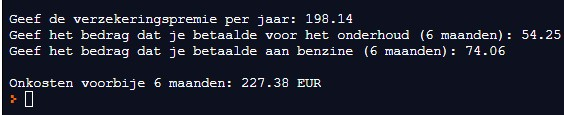

Om de uitgaven die verband houden met je bromfiets beter onder controle te houden, wil je een programma opstellen dat je helpt de halfjaarlijkse kosten van je bromfiets te berekenen. Je beperkt je hierbij tot de volgende onkosten: verzekering, onderhoud en benzine.
Let op, de verzekeringspremie wordt per jaar ingegeven, terwijl het onderhoud en de benzine voor een half jaar is.
Maak gebruik van passende commentaarregels om de verschillende stappen te verduidelijken.
Hieronder vind je de schermafdruk van een uitvoering van het programma:
